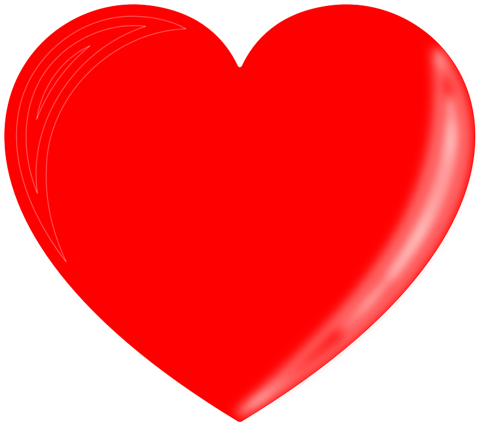
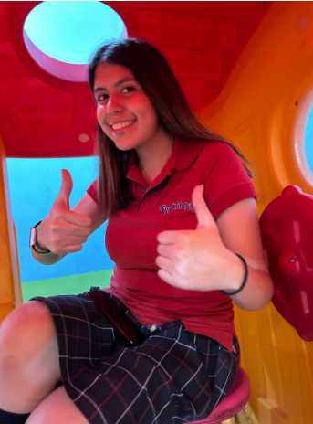
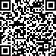
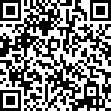

|  |  |
De: Isaac E.A.
Para: Luz Andrea M.P.
Es difícil escribir una carta para una niña tan perfecta como tú… tienes cualidades tan lindas que es imposible terminar de enumerarlas, pero, haré mi mayor esfuerzo.
Quisiera comenzar recordándote lo especial que eres, jamás imaginé tener una amiga tan linda cómo tú, no sabia realmente lo que era una amistad sincera, hasta que me mostraste como era, la definiste en una palabra, cariño, eso lo fue todo cuando te conocí, fue muy lindo la primera vez que tuve la oportunidad de hablar contigo, normalmente le agarro cariño a los que me apoyan y están conmigo… sin embargo, contigo sentí algo diferente, ya con el tiempo me di cuenta de lo maravillosa que eres, fuiste la primera amistad verdadera que tuve en la escuela, y hasta el día de hoy ha ido floreciendo de una manera muy bonita, aprecio cada tarde que hablamos, los lindos momentos que compartimos en el día día de la escuela, las travesuras que hacíamos, las bromitas, los juegos, incluso las pequeñas discusiones tenidas; de todo esto me empecé a encariñar más y más de ti, te empecé a ver de una manera muy linda, algo que jamás había tenido, fuiste alguien en quien pude depositar mi confianza, donde podía expresarme como realmente soy, sin tener miedo de lo que dirán de mí, te agradezco infinitamente por siempre escucharme, por estar atenta de mí, en verdad, cada que me decías cosas lindas yo me quedaba extrañado del porque eras así, nunca había experimentado algo así, pero aún así insististe en ser mi amiga… siempre lo tengo presente, que fuiste mi pionera, quien inició esta bonita amistad; sin embargo, en mi loco actuar… pasaban muchísimas cosas dentro de mi, mil pensamientos que invadían mi cabeza recordándome una y otra vez mi pasado, tinieblas que me atormentaban día a día, pero llegaste tú a iluminar mi vida, me enseñaste cosas que yo desconocía por completo, por eso me decidí a llamarte Sole mio que quiere decir “Sol mío” eres una personita muy muy muy hermosísima que despejó ,i mente por completo y me enseñó a querer de una manera diferente a lo habitual.
Muchas de las veces me preocupaba por el futuro, sabía que todo esto terminaría pronto, que los días para vernos finalizarían en Junio o Julio ya que te irías a E.U. sin embargo, cuando me dijiste que estarías un año más, mi rostro se llenó de felicidad, y supe que sería mi mejor año, ya que te tendría a mi lado un ciclo escolar más, donde compartir nuevas experiencias, nuevas risas, nuevas ocurrencias y todo lo demás… tenía otra oportunidad para quererte de una manera sin igual, sé que el reloj me apurará durante todo este año, pero quiero que recuerdes que tienes lugar espacioso en mi corazón, un espacio para hablar de lo que tú quieras, para continuar con nuestra amistad y fortalecerla.
A tu lado me siento alguien nuevo, alguien especial, únicamente me gusta estar contigo, tu me das esa seguridad de que todo estará bien, de saber que no soy alguien raro, sino alguien especial… tal vez muchas de las cosas que siento han ido desapareciendo poco a poco, con cada abrazo, con cada besito tuyo, me reconforta tanto a mi vida… nunca me cansaré de decirte lo especial y bonita que eres, tienes cualidades increíbles que a lo largo del tiempo he podido ver en ti.
Eres una niña muy amable, educada, respetuosa, solidaria, empática, responsable, siempre buscas el bien de los demás, los retos que se te presentan los superas de una manera impresionante, te admiro como no tengas una idea, no encuentro palabras para expresar lo que siento por ti; como es que a pesar de las dificultades y los obstáculos que hay en tu camino, jamás te das por vencida, siempre encuentras el modo de salir de todo lo que te sucede, yo creo que esa es la cualidad más destacable de tu inmensa personalidad.
Quiero que recuerdes también que te quiero muchisisisisimo y que siempre estaré preocupado por ti, por cómo te sientes, por las luchas que enfrentas diariamente, siempre estaré de tu lado, sin importar lo que suceda, puede que en algunas cosas no estemos de acuerdo, puede que discutamos por cosas que suceden, por mi carácter tan raro que estoy intentando remediar, pero de todo corazón créeme que eso no importa en lo absoluto, siempre te seguiré queriendo, el amor que te tengo es incondicional a todo lo que sucede entre nosotros. Tu bienestar siempre será mi prioridad, nunca olvides lo mucho que te quiere tu Batiamigo.
PD: Gracias por darte el tiempo de leer todo esto, te dejo tambien unas canciones, espero que te gusten, te quiero muchísimo 😊😊😊💕💕💕💕
|  | |
|
|
|
|
|
|
|
|
|
 |